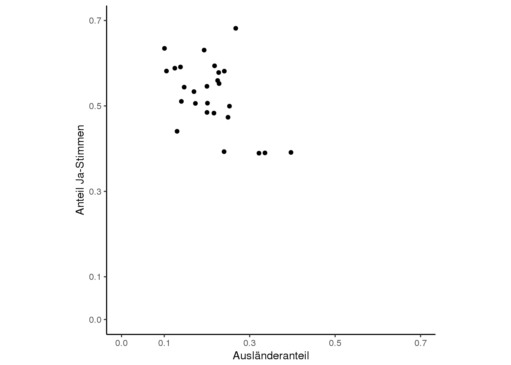
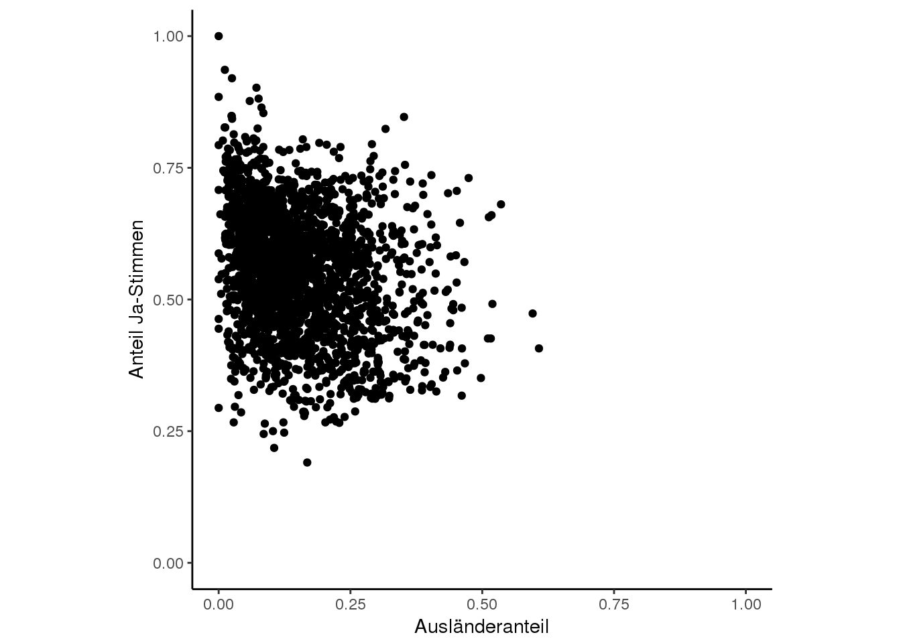
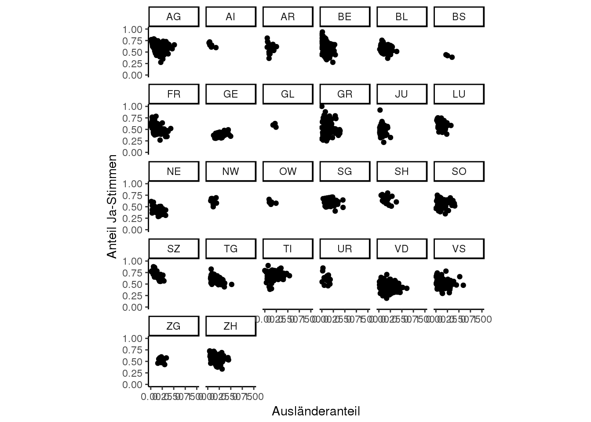
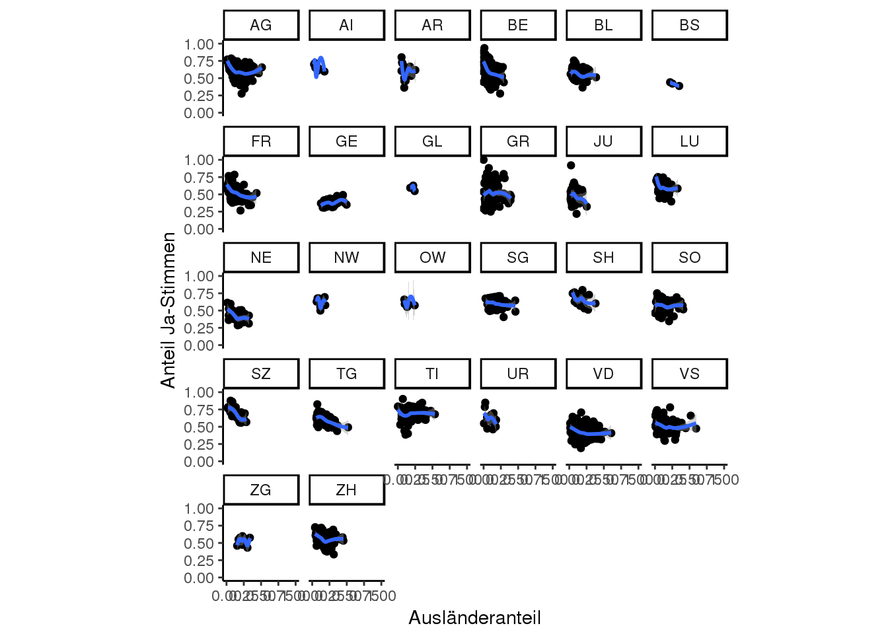
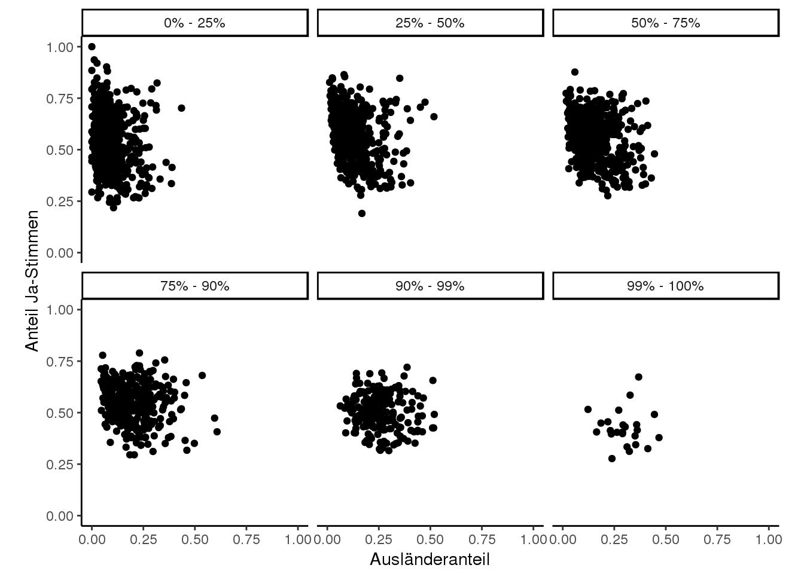

4.3 Übung
In dieser Übung geht es darum, die Grafiken aus dem Blog-post von Marko Kovic (blog.tagesanzeiger.ch) zu rekonstruieren. Freundlicherweise hat Herr Kovic meist die ggplot2 Standardeinstellungen benutzt, was die Rekonstruktion relativ einfach macht.
Die Links im Text verweisen auf die Originalgrafik, die eingebetteten Plots sind meine eigenen Rekonstruktionen.
Importiere als erstes den Datensatz initiative_masseneinwanderung_kanton.csv (auf der Blog-Seite erhältlich).
4.3.1 Aufgabenstellung
4.3.1.1 Kantonsebene
4.3.1.1.1 Aufgabe 1
Rekonstruiere Grafik 1 von Kovic. Erstelle dazu einen Scatterplot wo der Ausländeranteil der Kantone dem Ja-Anteil gegenüber gestellt wird. Speichere den Plot einer Variabel plot1.
{kind=link}
- nutze
coord_fixed()um die beiden Achsen in ein fixes Verhältnis zu setzen (1:1). - setze die Achsen Start- und Endwerte mittels
lims()oderscale_y_continuousbzw.scale_x_continuous. - Optional: Setze analog Kovic die
breaks(0.0,0.1…0.7) manuell
Rekonstruktion:

4.3.1.1.2 Aufgabe 2
Rekonstruiere Grafik 2. Erweitere dazu plot1 mit einer Trendlinie.
{kind=link}
4.3.1.2 Gemeindeebene
Importiere die Gemeindedaten initiative_masseneinwanderung_gemeinde.csv:
gemeinde <- read_delim("11_InfoVis1/data/initiative_masseneinwanderung_gemeinde.csv",",",locale = locale(encoding = "UTF-8"))4.3.1.2.1 Aufgabe 3
Rekonstruiere Grafik 3. Stelle dazu den Ausländeranteil aller Gemeinden dem Ja-Stimmen-Anteil gegenüber. Speichere den Plot als plot2
{kind=link}

{kind=link}
4.3.1.3 Gemeindeebene, nach Kantonen
4.3.1.3.1 Aufgabe 5
Rekonstruiere Grafik 5 indem plot2 mit facetting erweitert wird. Die Facets sollen die einzelnen Kantone sein. Speichere den Plot als plot3.
{kind=link}

4.3.1.3.2 Aufgabe 6
Rekonstruiere Grafik 6 indem plot3 mit einer Trendlinie erweitert wird.
{kind=link}
Rekonstruktion:

4.3.1.4 Gemeindeebene, nach Gemeindegrösse
4.3.1.4.1 Aufgabe 7
Rekonstruiere Grafik 7 indem plot2mit facetting erweitert wird. Die Facets sollen nun den Grössen-Quantilen entsprechen. Speichere den Plot unter plot4.
{kind=link}
Rekonstruktion:

{kind=link}
4.3.1.5 Korrelationen
4.3.1.5.1 Aufgabe 9 (Fortgeschritten)
Rekonstruiere die Korrelationstabelle.
Tipp: - Nutze group_by() und summarise() - Nutze cor.test() um den Korrelationskoeffizienten sowie den p-Wert zu erhalten. - Mit $estimate und $p.value können die entsprechenden Werte direkt angesprochen werden
Hinweis: aus bisher unerklärlichen Gründen weiche gewisse meiner Werte leicht von den Berechnungen des Herrn Kovics ab.
| Kanton | Korr.Koeffizient | Signifikanz |
|---|---|---|
| AG | -0.2362552 | *** |
| AI | -0.7828022 | - |
| AR | -0.0892817 | - |
| BE | -0.4422003 | *** |
| BL | -0.2919712 | ** |
| BS | -0.9935385 | - |
| FR | -0.4217634 | *** |
| GE | 0.3753004 | * |
| GL | -0.4070120 | - |
| GR | -0.0426607 | - |
| JU | -0.2252540 | - |
| LU | -0.3048455 | ** |
| NE | -0.5214180 | *** |
| NW | -0.2018174 | - |
| OW | -0.4813090 | - |
| SG | -0.2449093 | * |
| SH | -0.2995527 | - |
| SO | -0.0533442 | - |
| SZ | -0.7259276 | *** |
| TG | -0.5522862 | *** |
| TI | 0.1512509 | - |
| UR | -0.3848167 | - |
| VD | -0.2685301 | *** |
| VS | -0.1736954 | * |
| ZG | 0.0407166 | - |
| ZH | -0.2744683 | *** |
4.3.2 Lösung (R-Code)
library(tidyverse)
library(ggplot2)
library(stringr)
## # Es kann sein, dass man die Codierung des Files spezifizieren muss. Mit `readr::read_delim()`
## # läuft dies mit der Option locale = locale(encoding = "UTF-8") wobei anstelle von UTF-8 die
## # entsprechende Codierung angegeben wird.
## # Tipp: Excel speichert CSV oft in ANSI, welches für den Import in R nicht sonderlich geeignet
## # ist. Falls Probleme auftreten muss das File mittels einer geeigneter Software (Widows: "Editor"
## # oder "Notepad++", Mac: "TextEdit") und mit einer neuen Codierung (z.B. `UTF-8`) abgespeichert
## # werden.
kanton <- read_delim("11_InfoVis1/data/initiative_masseneinwanderung_kanton.csv",",",locale = locale(encoding = "UTF-8"))
# Lösung zu Aufgabe 1
# da die Spalten in Kovic's Daten Umlaute und Sonderzeichen enthalten, müssen diese in R mit Graviszeichen
# angesprochen werden. Dieses Zeichen wirder Schweizer Tastatur [1] mit
# Shitft + Gravis (Links von der Backspace taste) + Leerschlag erstellt
# [1] https://de.wikipedia.org/wiki/Tastaturbelegung#Schweiz
# Alternativ können die Spalten im Originalfile oder mit dplyr::rename() umbenannt werden
plot1 <- ggplot(kanton, aes(`Ausländeranteil`, `Ja-Anteil`)) +
geom_point() +
coord_fixed(1) +
scale_y_continuous(breaks = c(0,0.1,0.3,0.5,0.7),limits = c(0,0.7)) +
scale_x_continuous(breaks = c(0,0.1,0.3,0.5,0.7),limits = c(0,0.7)) +
labs(y = "Anteil Ja-Stimmen")
plot1
# Lösung zu Aufgabe 2
plot1 +
geom_smooth()
gemeinde <- read_delim("11_InfoVis1/data/initiative_masseneinwanderung_gemeinde.csv",",",locale = locale(encoding = "UTF-8"))
# Lösung zu Aufgabe 3
plot2 <- ggplot(gemeinde, aes(`Anteil Ausl`, `Anteil Ja`)) +
geom_point() +
labs(x = "Ausländeranteil",y = "Anteil Ja-Stimmen") +
coord_fixed(1) +
lims(x = c(0,1), y = c(0,1))
plot2
# Lösung zu Aufgabe 4
plot2 +
geom_smooth()
# Lösung zu Aufgabe 5
plot3 <- plot2 +
facet_wrap(~Kanton)
plot3
# Lösung zu Aufgabe 6
plot3 +
geom_smooth()
# Lösung zu Aufgabe 7
plot4 <- plot2 +
facet_wrap(~Quantile)
plot4
# Lösung zu Aufgabe 8
plot4 +
geom_smooth()
# Lösung zu Aufgabe 9
korr_tab <- gemeinde %>%
group_by(Kanton) %>%
summarise(
Korr.Koeffizient = cor.test(`Anteil Ja`,`Anteil Ausl`,method = "pearson")$estimate,
Signifikanz_val = cor.test(`Anteil Ja`,`Anteil Ausl`,method = "pearson")$p.value,
Signifikanz = ifelse(Signifikanz_val < 0.001,"***",ifelse(Signifikanz_val<0.01,"**",ifelse(Signifikanz_val<0.05,"*","-")))
) %>%
select(-Signifikanz_val)
##
##
## library(tidyverse)
##
## # Im Unterschied zu `install.packages()` werden bei `library()` keine Anführungs-
## # und Schlusszeichen gesetzt.
##
##
## library(lubridate)
##
##
## # Im Unterschied zu install.packages("tidyverse") wird bei library(tidyverse)
## # das package lubridate nicht berücksichtigtLiteratur
Wickham, Hadley. 2017b. Stringr: Simple, Consistent Wrappers for Common String Operations. https://CRAN.R-project.org/package=stringr.
Wickham, Hadley, Romain Francois, Lionel Henry, and Kirill Müller. 2017. Dplyr: A Grammar of Data Manipulation. https://CRAN.R-project.org/package=dplyr.
Henry, Lionel, and Hadley Wickham. 2017. Purrr: Functional Programming Tools. https://CRAN.R-project.org/package=purrr.
Wickham, Hadley, Jim Hester, and Romain Francois. 2017. Readr: Read Rectangular Text Data. https://CRAN.R-project.org/package=readr.
Wickham, Hadley, and Lionel Henry. 2017. Tidyr: Easily Tidy Data with ’Spread()’ and ’Gather()’ Functions. https://CRAN.R-project.org/package=tidyr.
Müller, Kirill, and Hadley Wickham. 2017. Tibble: Simple Data Frames. https://CRAN.R-project.org/package=tibble.
Wickham, Hadley, and Winston Chang. 2016. Ggplot2: Create Elegant Data Visualisations Using the Grammar of Graphics. https://CRAN.R-project.org/package=ggplot2.
Wickham, Hadley. 2017c. Tidyverse: Easily Install and Load ’Tidyverse’ Packages. https://CRAN.R-project.org/package=tidyverse.